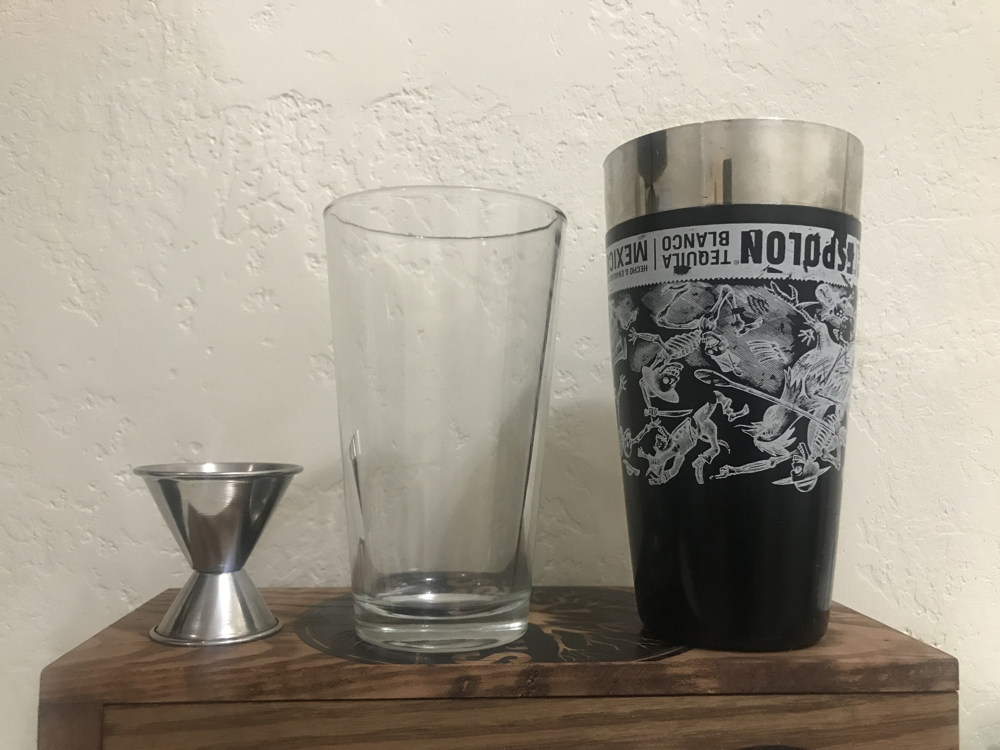
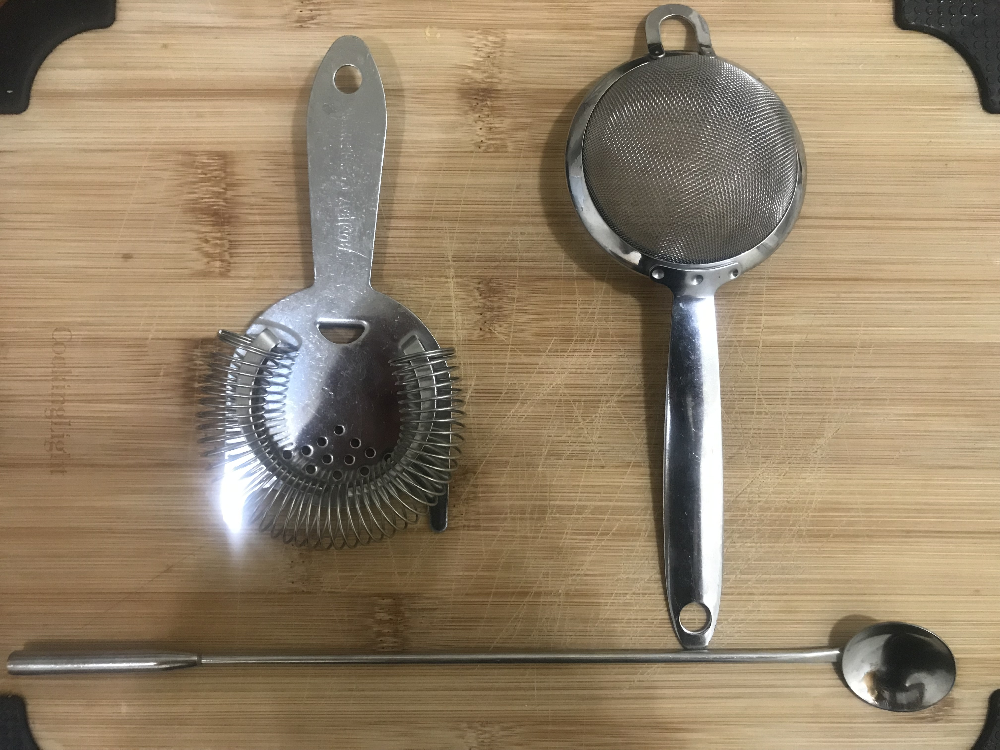
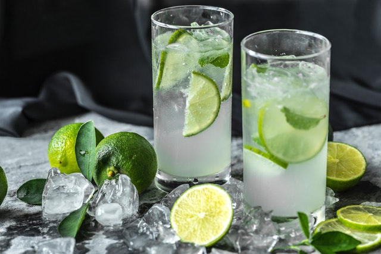
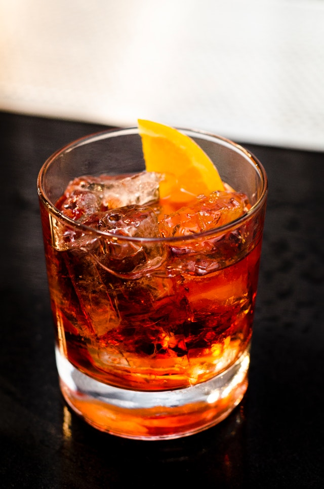
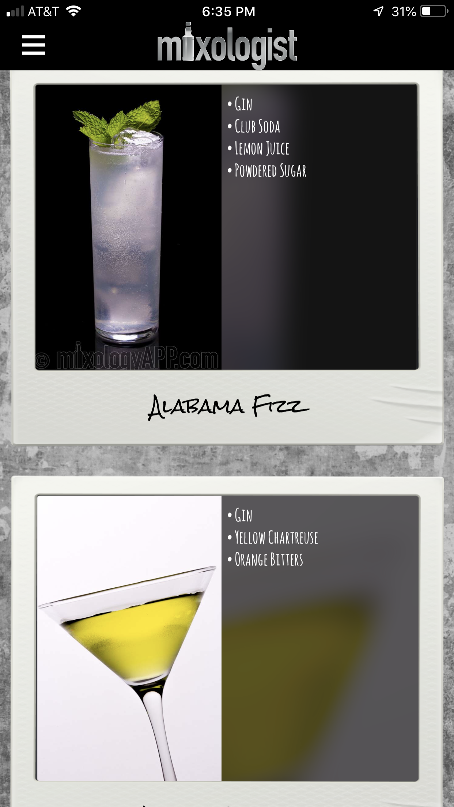

Hello, I am JJ and I would like to share a little about making cocktails. It is one of my hobbies. It is fun and brings people together. I really like experimenting and trying to make new cocktails or old ones with a new TWIST (pun intended).

Jigger, Mixing Glass and Shaker
How to Make a Cocktail
To make the best Cocktail you can, first you need quality ingredients. This includes fresh fruit, juices and garnishes. Then if you are able to, pick up some top-shelf Spirits. Next, you will need some tools of the trade. You will need a strainer, stirring spoon, muddler, mixing glass and shaker. To get your drinks perfect you will need a jigger as well. It is used to measure the ingredients for the Cocktail. These tools come in sets and can be purchased for as little as 20 dollars.

Strainers and Stirrer
I will now tell you how to make two of my favorite cocktails, the Mojito and Negroni. There are many variations of these cocktails but we will stick to the Classic recipes for now. Feel free to experiment on your own. First the Mojito.
- 12 fresh mint leaves
- 1/2 lime, cut into 4 wedges
- 2 tablespoons white sugar
- Ice
- 1 1/2 ounces white rum
- Club soda
Place mint leaves and 1 lime wedge into a sturdy glass. Use a muddler to crush the mint and lime to release the mint oils and lime juice. Add 2 more lime wedges and the sugar, and muddle again to release the lime juice. Do not strain the mixture. Fill the glass almost to the top with ice. Pour the rum over the ice, and fill the glass with carbonated water. Stir, taste, and add more sugar if desired. Garnish with the remaining lime wedge

Mojito
Next is the Negroni
- 3/4 ounce campari
- 3/4 ounce gin
- 3/4 sweet vermouth
- Ice
- Club soda
- Twist of orange peel
In a rocks glass over ice, combine campari, gin, sweet vermouth. Fill with carbonated water and garnish with a Orange twist.

Negroni
ADDITIONAL RESOURCES
